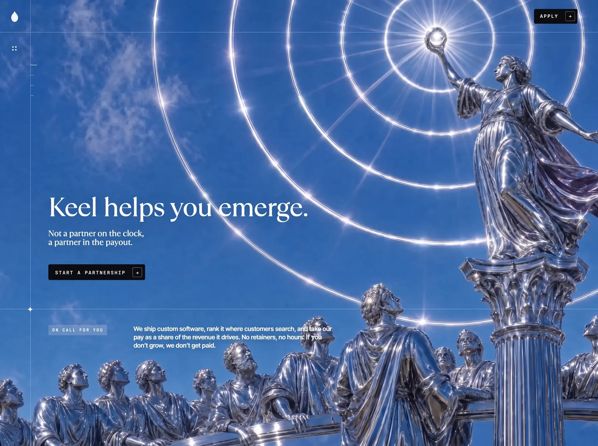

Keel
Creativecreativeyilai-ai 公开页面
收录时间：2026-09-12正文：25,019 字符

本地预览图 · webp
完整提示词
Build a single self-contained file, index.html: plain HTML, CSS and vanilla JavaScript, with no frameworks, build step or libraries. It is a full-screen, scroll-driven landing page for "Keel". A background video is scrubbed by scroll position, four fixed text "panels" cross-fade over it, and a fifth section is then revealed through a pixelated hole that opens in the video. Reproduce everything below exactly: values, copy, URLs, timings and formulas.
==================================================================
1. HEAD, FONTS, ASSETS
==================================================================
<title>Keel — Keel helps you emerge.</title>
<meta name="viewport" content="width=device-width, initial-scale=1.0, viewport-fit=cover">
Preconnect: https://fonts.googleapis.com, https://fonts.gstatic.com (crossorigin), https://d2ol7oe51mr4n9.cloudfront.net (crossorigin)
Fonts (exact links):
- Serif (all headings, hero sub-line, preloader wordmark): <link href="https://db.onlinewebfonts.com/c/157aa88d85ea328fb5d533dfa569333b?family=TT+Ramillas+Regular" rel="stylesheet"> → font-family 'TT Ramillas Regular', Georgia, serif. Regular only, never italic.
- Sans (body/paragraphs): Inter 300/400/500
- Mono (labels, buttons, tags): JetBrains Mono 400/500
<link href="https://fonts.googleapis.com/css2?family=Inter:wght@300;400;500&family=JetBrains+Mono:wght@400;500&display=swap" rel="stylesheet">
Background video (scroll-scrubbed; encoded all-keyframe):
https://d2ol7oe51mr4n9.cloudfront.net/user_38xzZboKViGWJOttwIXH07lWA1P/a2de5392-2df2-4a17-8fca-f5a80414fdd4.mp4
Section-5 backdrop image (1920×2571, blue sky gradient #3f66aa at the top → #7fa9d8 at the bottom, with chrome clouds):
https://images.higgs.ai/?default=1&output=webp&url=https%3A%2F%2Fd8j0ntlcm91z4.cloudfront.net%2Fuser_38xzZboKViGWJOttwIXH07lWA1P%2Fhf_20260911_080319_f920a7fa-2033-49f5-8106-535c7a58419d.png&w=1920&q=85
(escape & as & inside the HTML attribute)
Logo SVG (pear drop, viewBox 0 0 16 22, fill #fff, rendered 16×22, opacity .95):
M8 0c-.6 2.4-2 3.6-3.4 5.2C2.6 7.4 1 9.6 1 13.4 1 18.2 4.1 22 8 22s7-3.8 7-8.6c0-3.8-1.6-6-3.6-8.2C10 3.6 8.6 2.4 8 0Z
"Spark" SVG (four-point star, viewBox 0 0 12 12, 12×12, fill #fff), reused everywhere:
M6 0C6.4 3.8 8.2 5.6 12 6 8.2 6.4 6.4 8.2 6 12 5.6 8.2 3.8 6.4 0 6 3.8 5.6 5.6 3.8 6 0Z
==================================================================
2. DESIGN TOKENS (:root)
==================================================================
--ink:#ffffff; --ink-dim:rgba(255,255,255,.72); --black:#080a0d; --sky:#5b8fd6;
--pad:clamp(20px,3.6vw,56px);
--rail:clamp(52px,5.3vw,108px); /* left rail width */
--bar:var(--rail); /* nav bar height (the top-left cell is square) */
--line:rgba(255,255,255,.24); /* every hairline */
--ease:cubic-bezier(.22,.61,.36,1);
Reset: *{margin:0;padding:0;box-sizing:border-box}. html: scroll-behavior:auto; text-size-adjust:100%.
body: background var(--sky); color var(--ink); Inter; -webkit-font-smoothing:antialiased; overflow-x:hidden.
::selection{background:#fff;color:#08203f}
All text on the page is white. There is NO dark scrim or overlay on the video.
==================================================================
3. LAYER STACK (all position:fixed unless noted)
==================================================================
z 0 #bg: video wrapper, background linear-gradient(180deg,#6ba0e0,#4a7fc4); the <video id="film" playsinline webkit-playsinline muted preload="auto" disablepictureinpicture> fills it with object-fit:cover, will-change:transform, transform:translateZ(0).
z 1 #scroll-track (position:relative, in normal flow): an empty div whose height JS sets, giving the page its scroll length (default CSS height 520vh).
z 2 #grain: inset:-120%, opacity .16, pointer-events none, mix-blend-mode overlay. Background is an inline SVG data URI: 160×160, feTurbulence type fractalNoise baseFrequency .85 numOctaves 3, rect opacity .5. Animated "grain 1.1s steps(3) infinite" through translate 0,0 → -2%,1% → 1%,-2% → 0,0. Hidden under prefers-reduced-motion.
z 4 <canvas id="hole">: inset 0, 100%×100%, pointer-events none, visibility hidden (JS toggles).
z 5 <section id="work">: inset 0, overflow hidden, background #7fa9d8, visibility hidden (class .live shows it).
z 10 #stage: inset 0, pointer-events none. Holds the 4 panels and the closing .frame.
z 30 #hint: scroll hint.
z 35 .rail: left rail.
z 40 nav.
z 100 #boot: preloader.
==================================================================
4. CHROME
==================================================================
.mono = JetBrains Mono, 9.5px, letter-spacing .22em, uppercase.
NAV: fixed top/left/right, height var(--bar), flex space-between, align center,
- nav::after = a full-width 1px bottom hairline, background var(--line), opacity var(--cl,1). (--cl is a root CSS variable that JS drives.)
- Left: <a class="brand" href="#" aria-label="Keel home">, width var(--rail), flex centred, containing the logo SVG.
- Right: <a href="#apply" class="btn btn--sm">Apply <span class="arw">→</span></a>
BUTTON .btn: inline-flex, gap 14px, background var(--black), color #fff, border 0, radius 3px, padding 6px 6px 6px 14px, JetBrains Mono 9.5px, letter-spacing .2em, uppercase, no underline, nowrap. Transition background/transform/color .35s var(--ease).
- :hover → background #fff, color var(--black), translateY(-1px).
- .arw = the arrow inside a boxed square: inline-grid centred, 20×20, 1px border rgba(255,255,255,.38), radius 2px, font-size 10px, letter-spacing 0. Transition transform/border-color .35s. On hover: translateX(3px), border-color rgba(8,10,13,.3).
- .btn--sm → padding 5px 5px 5px 12px.
LEFT RAIL .rail: fixed left/top/bottom, width var(--rail), flex column, align centre, padding var(--bar) 0 calc(var(--pad)*.7), pointer-events none.
- .rail::after = a full-height 1px line on its right edge, var(--line), opacity var(--cl,1).
- .dots: a 2×2 grid of 3×3px white squares (gap 3px, opacity .9), margin-top calc(var(--rail)/2 - 4.5px), so it sits centred in the square cell below the logo.
- .ticks: position absolute, left calc(100% - 1px), top calc(var(--bar) + var(--rail)); flex column, gap clamp(20px,1.4vw,28px). Holds 4 <i> ticks (one per panel), each 7×1px rgba(255,255,255,.4). The active tick (.on) is 14px wide, #fff. Width and background transition .45s var(--ease).
SCROLL HINT #hint: fixed, bottom 22px, centred, flex column, gap 8px, colour rgba(255,255,255,.7). Contains <span class="mono">Scroll</span> and a .bar (1×26px, linear-gradient(#fff,transparent)) animated "drop 1.9s var(--ease) infinite": scaleY 0→1 from the top (0–45%), then 1→0 toward the bottom (55–100%). Opacity transition .5s; JS hides it once the page is scrolled.
PRELOADER #boot: fixed inset 0, background #205CA9, flex column centred, gap 20px, opacity/visibility transition .9s. Class .done hides it. Contents:
- .mark "Keel" (serif, 34px, letter-spacing .04em)
- .track: width min(240px,52vw), 1px tall, rgba(255,255,255,.2), with an inner <i id="bootbar"> white fill whose width animates (transition .3s linear)
- .pct.mono #bootpct "Loading 0%" at rgba(255,255,255,.55)
==================================================================
5. PANELS (inside #stage; each <section class="panel" data-panel>)
==================================================================
.panel: absolute inset 0, padding 0 var(--pad) 0 calc(var(--rail) + var(--pad)*.8), flex column, justify-content center, opacity 0, will-change opacity/transform. Direct children get pointer-events auto. .inner: max-width min(1440px,100%), width 100%, margin 0 (left-aligned, never centred).
TYPE:
- h1,h2: serif, weight 400, line-height .94, letter-spacing -.018em, font-size clamp(46px,7.1vw,108px), text-shadow 0 2px 40px rgba(6,16,36,.28).
- h1 and any h2 inside .framed (use :where(.framed) h2 to keep specificity low): font-size clamp(42px,4.3vw,96px), line-height 1, letter-spacing -.022em.
- .hero and .framed panels: justify-content flex-end; padding-bottom calc(31vh + clamp(36px,6.4vh,72px)). This puts the headline just above the divider rule.
- .lede (base): 13–16px, clamp(13px,1.06vw,16px), weight 300, line-height 1.62, max-width 34ch.
- .hero .lede: serif, clamp(17px,1.22vw,26px), weight 400, line-height 1.02, letter-spacing -.015em, #fff, margin-top clamp(16px,1.5vw,30px).
- .cta-row: flex, gap 12px. In the hero: margin-top clamp(26px,3vw,60px).
FOOTNOTE (a full-bleed divider with a tag and line below it):
- .footnote: absolute, left 0, right 0, top 69%, border-top 1px var(--line), padding clamp(28px,2.6vw,52px) var(--pad) 0 calc(var(--rail) + var(--pad)*.8); grid with columns clamp(150px,14vw,280px) minmax(0,26em), align start. In .framed panels, align-items is centre.
- .footnote .spark: absolute, left calc(var(--rail) - .5px), top 0, translate(-50%,-50%). It sits exactly where the rule crosses the rail line.
- .footnote .spark--r: left calc(86% + .5px). It sits where the rule crosses the .vrule.
- .footnote p: clamp(12.5px,.78vw,15.5px), line-height 1.34, weight 500, letter-spacing -.025em, #fff, text-shadow 0 1px 14px rgba(6,16,36,.3).
- .footnote--short: right 45%, padding-right 0 (a shorter rule).
- .tag (global): inline-block, justify-self start, padding 6px 8px, radius 2px, background rgba(255,255,255,.16), colour rgba(255,255,255,.9), font-size 8.5px, line-height 1, nowrap. Always used together with .mono.
- .vrule: absolute, top 0, bottom 0, left 86%, 1px, var(--line).
- .kicker: absolute, top calc(var(--bar) + var(--rail)), left calc(var(--rail) - 1px), translateY(-50%), flex, gap 12px, #fff. ::before is a 22×1px white line. This puts the label on the first rail tick, joined to the rail.
PANEL 1: class "panel hero"
.inner:
<h1>Keel helps you emerge.</h1> (one line, no <br>)
<p class="lede">Not a partner on the clock,<br>a partner in the payout.</p>
.cta-row: <a href="#apply" class="btn">Start a partnership <span class="arw">→</span></a>
.footnote: spark, <span class="mono tag">On call for you</span>, <p>We ship custom software, rank it where customers search, and take our pay as a share of the revenue it drives. No retainers, no hours: if you don't grow, we don't get paid.</p>
PANEL 2: class "panel framed". NO text at all:
<i class="vrule"></i> and a .footnote containing only the two sparks (.spark and .spark.spark--r). It is just the full-width rule, the right vertical line and the two stars.
PANEL 3: class "panel framed"
<span class="mono kicker">The standard</span>, <i class="vrule"></i>
.inner: <h2>We excel at<br>what it takes.</h2>
.footnote.footnote--short: spark, <span class="mono tag">Undeniable</span>, <p>At Keel, we help the best businesses become undeniable.</p>
PANEL 4: class "panel", id="apply"
Only <span class="mono kicker">The share</span>.
CLOSING FRAME (a sibling of the panels inside #stage, not inside panel 4, so it doesn't drift with the panel): <div class="frame" id="frame" aria-hidden="true">
4 lines: <i class="fv fv--l">, <i class="fv fv--r">, <i class="fh fh--t">, <i class="fh fh--b">; plus 4 spark SVGs with classes s-tl, s-tr, s-bl, s-br.
CSS: .frame is absolute inset 0, opacity 0, pointer-events none. Lines are absolute at left 0 / top 0, background var(--line), will-change transform. .fv is 1px × 100%; .fh is 100% × 1px.
fv--l translateX(var(--x1)); fv--r translateX(var(--x2)); fh--t translateY(var(--y1)); fh--b translateY(var(--y2)).
Sparks are absolute at left -5.5px, top -5.5px, and each is moved with translate(var(--x?),var(--y?)) to its corner.
==================================================================
6. SECTION 5: "THE WORK" (#work, below the video, revealed later)
==================================================================
Markup, in order, directly after #grain:
<canvas id="hole" aria-hidden="true"></canvas>
<section id="work" aria-label="The work">
<img class="work-bg" id="workImg" alt="" decoding="async" src="(backdrop URL)">
<span class="mono kicker work-fade">The work</span>
<i class="work-rule work-fade"></i>
<div class="work-scroll" id="workScroll">
<div class="work-ticks work-fade" id="workTicks"></div> (JS fills this with <i> ticks)
<div class="work-col work-fade" id="workCol"> five <article class="work-item">, each: <span class="mono tag">…</span><h3>…</h3><p>…</p> </div>
</div>
<span class="mono work-pct work-fade" id="workPct">0%</span>
</section>
Items (tag / h3 / p):
1. Search engine optimization / Everything it takes to be found, under one roof. / Search and software are one discipline at Keel. The product is built to rank from its first commit, and the SEO is done by the people who wrote the code.
2. Custom software / Custom software, made like products, not projects. / We ship custom software, rank it where customers search, and take our pay as a share of the revenue it drives.
3. Conversion / Conversion systems, pricing and funnel changes. / No retainers, no hours: if you don't grow, we don't get paid.
4. Retention / Retention loops, lifecycle and owned audience. / Every line of code, every page, every asset — assigned to you from day one.
5. The share / One core. Two halves. / We only take a piece of what we ship. Tell us what you're building and we'll tell you, honestly, whether we can lift it. Then: <a href="mailto:hello@keel.vc" class="btn">Start a partnership <span class="arw">→</span></a> (margin-top 26px)
CSS:
- .work-bg: absolute at top-left, width 100%, height auto, display block, transform-origin 50% 0, will-change transform.
- .work-rule: absolute, full height, left 62%, 1px, var(--line).
- .work-scroll: absolute, left 0, right 0, top 0, will-change transform.
- .work-ticks i: absolute, left 62%, 30×1px, rgba(255,255,255,.72). Every :nth-child(5n+4) is 44px wide.
- .work-col: absolute, left calc(62% + 34px), top 20vh, width min(380px,30vw).
- .work-item + .work-item: margin-top 30vh.
- .work-item h3: serif, 400, clamp(22px,1.9vw,34px), line-height 1.14, letter-spacing -.018em, margin-top 14px.
- .work-item p: margin-top clamp(22px,2.6vw,40px), clamp(13px,.85vw,16px), line-height 1.3, weight 500, letter-spacing -.025em.
- .work-pct: absolute, left 62%, bottom clamp(28px,5vh,52px), translateX(-50%), padding 3px 0, rgba(255,255,255,.85), 8.5px.
- Text reveal: .work-fade has opacity 0 with transition opacity .9s var(--ease); #work.on .work-fade → opacity 1. .work-item starts at translateY(18px) with transition transform 1.1s var(--ease); #work.on .work-item → transform none.
==================================================================
7. JAVASCRIPT (one IIFE, 'use strict')
==================================================================
Helpers: clamp(v,a=0,b=1); smooth(t)=t*t*(3-2t).
7.1 LOAD / PRELOADER
- fetch(VIDEO_URL,{mode:'cors',credentials:'omit'}). Stream it with res.body.getReader(), collect the chunks, and update the progress bar with got/total (from content-length), or with min(.92, got/12e6) if there is no total. Then set film.src = URL.createObjectURL(new Blob(chunks,{type:'video/mp4'})).
- On failure: film.src = VIDEO_URL, preload 'auto', and fake the progress (+.05 every 140ms up to .9, cleared on canplaythrough or after 12s).
- Set 100%, await loadeddata (15s timeout), then try play() + pause() to wake the decoder, set currentTime 0, and call start().
- start(): dur = film.duration (fallback 12); layout(); target = current = scrollY; listen for 'seeked'/'error' → pending=false; begin the rAF loop; #boot.classList.add('done'); body.style.overflowY='auto'.
7.2 LAYOUT / SCROLL BUDGET (pixels): layout()
- w = document.documentElement.clientWidth (excludes the scrollbar); h = innerHeight; bp = innerWidth (used for breakpoints).
- perPanel = bp<=380 ? 155 : bp<=600 ? 140 : bp<=900 ? 128 : 118 (vh). runway = bp<=600 ? 38 : 26 (vh).
- film = max(1, (4*perPanel + runway)/100*h - h). This is the scroll distance for panels 1–4.
- hole = 1.3*h. This is the scroll distance for the hole-opening transition.
- lastTop = workCol.offsetTop + workCol.lastElementChild.offsetTop; work = max(h, lastTop - 0.3*h). The work section scrolls until the last item's top sits 30% down the screen.
- rail = .rail offsetWidth (0 when hidden); bar = nav offsetHeight; imgH = w * naturalHeight/naturalWidth.
- #scroll-track height = film + hole + work + h (px).
- buildTicks(colBottom + h), where colBottom = workCol.offsetTop + offsetHeight: n = ceil(span/96) <i> ticks, tick i placed at top (i+1)*96px.
- sizeHole(); reset the paint caches.
- Call layout() on init, on resize, on workImg 'load', and on document.fonts.ready.
7.3 RAF LOOP (smooth chase)
current += (target - current)*0.115; snap to target when within 0.5px. target = scrollY, updated by a passive scroll listener.
p = clamp(current/film) → panels 1–4 and video time
u = clamp((current - film)/hole) → hole transition
r = max(0, current - film - hole) → work scroll (px)
Video: if dur, not pending, and |film.currentTime - p*dur| > 1/90, set pending=true and film.currentTime = p*dur.
Call paintUI(p, out) where out = 1 - smooth(clamp((u-0.8)/0.12)); then paintHole(u); then paintWork(r).
Cancel rAF on visibilitychange hidden; resume (pending=false) when visible.
7.4 PANELS: paintUI(p, out)
n=4, seg=1/n. For panel i: local = (p - i*seg)/seg. If -0.42 < local < 1.42:
fadeIn = first panel ? 1 : smooth(clamp((local+0.30)/0.42))
fadeOut = last panel ? 1 : 1 - smooth(clamp((local-0.66)/0.40))
o = min(fadeIn, fadeOut)
ly = clamp(local,-0.3,1.3); for the first panel ly = max(ly,0.5); for the last ly = min(ly,0.5)
y = (0.5-ly) * shift, where shift = innerWidth<=600 ? 24 : <=900 ? 34 : 46
last panel: o *= out
Otherwise o = 0. Apply opacity, translate3d(0,y,0), and visibility hidden when o < .01.
Rail ticks: the active tick is min(n-1, floor(p*n)); toggle .on only when it changes.
#hint opacity = p > 0.02 ? 0 : 1.
paintFrame((p - 3*seg)/seg, out).
7.5 CLOSING FRAME: paintFrame(local, out)
fo = smooth(clamp((local+0.30)/0.42)) * out. Skip the work if fo and the previous fo are both 0.
t = smooth(clamp(local/0.8)); lerp(from,to) = from + (to-from)*t (px).
The frame's opacity is fo. Set CSS vars on #frame:
--x1: rail-1 → 0.31w (starts exactly on the rail line)
--x2: 0.86w → 0.66w (starts on the .vrule)
--y1: bar-1 → 0.14h (starts on the nav hairline)
--y2: 0.69h → 0.57h (starts on the 69% divider)
Set root --cl = 1 - fo, so the rail and nav hairlines fade out as the frame's lines take over, then return at the end.
The effect: the page's own lines detach and slide toward the centre, boxing the subject, with sparks at the 4 corners.
7.6 THE HOLE (dithered opening in the zooming video)
Constants: CELL = 4 (CSS px per dither pixel); FILL = '#7fa9d8';
FRINGE colours = [[63,102,170],[82,124,190],[112,152,212],[190,214,244],[255,255,255],[206,212,224]];
BAYER4 = [0,8,2,10,12,4,14,6,3,11,1,9,15,7,13,5].
sizeHole(): dpr = min(devicePixelRatio,2); the #hole canvas backing store is w*dpr × h*dpr. Create two offscreen canvases (mask and edge) of cols×rows = ceil(w/4)×ceil(h/4), each with an ImageData. Precompute per cell (seeded PRNG: seed=7, seed = seed*16807 % 2147483647, rand = seed/2147483647):
dx = |x*4 - w/2| / h ; dy = |y*4 - h/2| / h * 0.8
d = (dx^1.6 + dy^1.6)^(1/1.6) (a tall, soft-cornered opening)
v = d + 0.14*(BAYER[(y&3)*4+(x&3)]/15 - 0.5) + 0.05*sin((x + y*0.6)*0.9) + 0.16*(rand()-0.5)
tone = floor(rand()*rand()*6) (biased toward the blues)
Track vMin and vMax.
paintHole(u) (skip if u is unchanged):
open = clamp((u-0.12)/0.8)
#bg transform = u>0 ? scale(1 + 0.45*smooth(clamp(u/0.92))) : none (the video pushes in)
covered = open >= 1. When covered changes: #bg visibility hidden/visible; toggle #work classes 'live' and 'on'.
If open <= 0 or covered: hide #hole and return. Otherwise show it:
r = vMin - 0.02 + (vMax - vMin + 0.04) * open²
For each cell: mask alpha = v<r ? 255 : 0. Edge cell (r <= v < r+0.05): its FRINGE colour at alpha 255, otherwise alpha 0. putImageData both.
Draw onto #hole: source-over, smoothing ON, fill FILL, drawImage(workImg, 0,0, W, imgH*dpr). Then smoothing OFF, 'destination-in' the mask scaled by 4*dpr. Then 'source-over' the edge canvas scaled by 4*dpr.
Result: a crisp 4px pixel-dissolve hole showing the section-5 backdrop, with sparkling blue/white pixels on its edge. When fully open, the canvas matches the resting #work layer exactly, so the swap is seamless and the text then fades in.
7.7 WORK SCROLL: paintWork(r) (skip if unchanged)
rr = clamp(r/work); sc = 1 + 0.1*rr; ty = rr * max(0, imgH*sc - h)
workImg transform = translate3d(0,-ty px,0) scale(sc) (slow parallax plus a slight zoom; it ends flush with the bottom of the screen)
workScroll transform = translate3d(0,-r px,0) (the content and ticks scroll at 1:1)
workPct text = round(rr*100) + '%'
7.8 CTAs
Every a[href="#apply"] prevents the default and calls window.scrollTo({top: scrollHeight - innerHeight, behavior:'smooth'}). This lands on item 5.
==================================================================
8. RESPONSIVE
==================================================================
@media (max-width:900px):
--rail:34px; --bar:56px. h1,h2 clamp(36px,9.5vw,72px); h1 and :where(.framed) h2 clamp(34px,7vw,60px).
.kicker: static, no transform, align-self flex-start, margin-bottom 16px. .vrule hidden.
.footnote: display flex column, gap 10px, static, margin-top clamp(20px,4vw,32px), padding clamp(16px,3vw,22px) 0 0; its sparks hidden; p max-width none.
.panel: justify flex-end, padding-top calc(68px + safe-area-top), padding-bottom calc(120px + safe-area-bottom).
#work .kicker: absolute, top calc(var(--bar) + 28px), left calc(var(--rail) + var(--pad)*.8), no transform.
#work .work-rule, .work-ticks i, .work-pct: left calc(var(--rail) + var(--pad)*.8). All ticks 16px wide.
#work .work-col: left calc(var(--rail) + var(--pad)*.8 + 28px), right var(--pad), width auto, top 30vh.
@media (max-width:600px):
--pad:clamp(16px,4.8vw,24px); --rail:0px; .rail hidden.
nav: height calc(var(--bar) + safe-area-top), padding-top safe-area-top, left/right padding var(--pad) + safe-area insets; .brand width auto.
.panel: left/right padding var(--pad) + safe-area insets, padding-top calc(64px + safe-top), padding-bottom calc(100px + safe-bottom).
h1,h2 clamp(30px,11vw,48px), line-height .98. .lede 14px, max-width none.
.footnote: margin-top clamp(24px,5vw,36px), padding-bottom safe-area-bottom; p 11px, line-height 1.6; .mono inside wraps.
.btn: justify centre, min-height 44px, padding 8px 8px 8px 16px. .btn--sm: min-height 40px, padding 6px 6px 6px 13px.
#hint bottom calc(14px + safe-bottom). #boot .mark 28px.
@media (max-width:380px): h1,h2 clamp(28px,10.5vw,40px); .mono 8.5px, letter-spacing .18em; .btn 8.5px, letter-spacing .16em, gap 10px.
@media (max-height:500px) and (orientation:landscape): .panel justify centre, padding-top calc(52px+safe-top), padding-bottom calc(48px+safe-bottom); h1,h2 clamp(24px,6vh,40px); .footnote margin-top 12px; #hint hidden.
@media (hover:none): .btn:active scale(.98).
@media (prefers-reduced-motion:reduce): #grain hidden.
==================================================================
9. SCROLL JOURNEY (what the result should feel like)
==================================================================
1) Blue preloader "Keel" with a progress line → fades out.
2) Hero over the video: left-aligned serif headline and button, a full-width rule at 69% with a star where it crosses the rail, and the tag plus paragraph below.
3) Panel 2: only the rule, the right vertical line at 86%, and two stars.
4) Panel 3: the "The standard" label on the rail tick, a two-line headline, and a shorter rule (to 55%) with a tag and line.
5) Panel 4: the page's lines detach and glide in to frame the centre, with stars at the corners.
6) The video pushes in (to 1.45×) while a pixel-dithered hole with a sparkling edge opens from the centre, showing the blue chrome-cloud sky.
7) Once the video is gone, the "The work" UI fades in. Scrolling moves the five items up past a ticked vertical rule at 62%, while the sky drifts slowly and zooms slightly, and a % counter at the rule's foot tracks progress. The page ends on "One core. Two halves." with the Start a partnership button.
Scrolling is smoothed (0.115 lerp), and the video scrubs frame-accurately with the scroll. Everything reverses correctly when scrolling back up.把上面的提示词完整复制到支持长文本的 AI 工具中，再按需要替换品牌名、配色与文案。提示词描述的是整页结构与动效节奏，生成后建议在真实浏览器里检查首屏加载和移动端表现。
来源与版权
该条目来自公开提示词页面，原始出处信息未随页面提供。
提示词文本与预览素材的版权归原作者或原平台所有，本站仅作索引与归档。若你是权利人并希望移除本条内容，请通过联系方式告知。